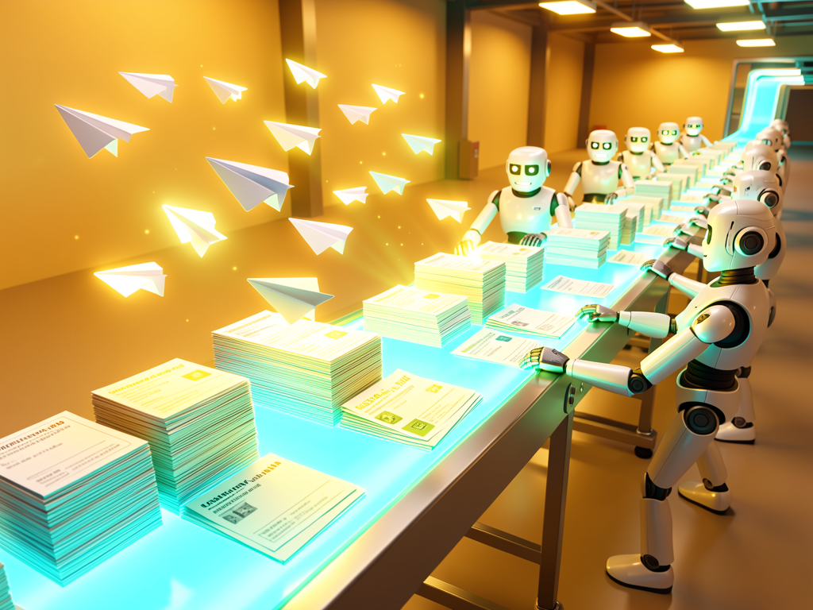

Bot de Telegram com fila durável em SQLite: roda skills de uma etapa e fluxos de várias fases com estado, portão humano e retomada depois de queda.

O bot recebe comandos no Telegram, enfileira o trabalho e o executa como agente. A fila é durável: se o processo cair no meio de um render, na próxima subida ele reclama o que ficou em voo antes de aceitar trabalho novo.
SQLite em WAL, claim atômico, lease com heartbeat e drain no desligamento. Um kill -9 no meio de um job não deixa estado indefinido — nada fica running com lease vivo.
Pipeline com estado por fase e por alvo, definição congelada na criação, pausa para você fazer sua parte (/aprovar) e retomada seletiva com /refazer.
Uma skill é um prompt + uma entrada no registry. Um fluxo é um repo com flow.json + prompts/. Nenhum dos dois pede uma linha de TypeScript no bot.
O gateway valida quem fala (allowlist de chat), o comando vira job na fila certa, um worker reclama o job com lease, o agente executa e o notificador devolve o resultado no chat.
io (10) · cpu (1) · texto (2) · render (1) · navegador (1). Um render pesado não trava a fila de texto.
Skill = uma etapa, sem estado — refazer do zero é aceitável. Fluxo = várias fases com estado, quando jogar fora o trabalho parcial seria absurdo.
Migrations → raiz de mídia → recuperação de leases vencidos → só então workers e bot. É essa ordem que torna o processo recuperável de uma queda.
Node com TypeScript, um bot criado no Telegram e um .env com as cinco variáveis obrigatórias. Sem uma delas o boot falha alto e cedo, antes de subir qualquer worker.
Instale e rode os testes antes de subir qualquer coisa.
# na raiz do repo npm install npm test
Crie o bot no @BotFather e guarde o token. O valor real nunca vai para o git.
# .env (modo 600, fora do git) BOT_TOKEN=… ALLOWED_CHAT_IDS=123,456
Caminho do banco da fila, raiz de estado e arquivo de log — as outras três obrigatórias.
QUEUE_DB=./inemaccbot.db STATE_DIR=./estado LOG_FILE=./inemaccbot.log
Todos os comandos abaixo são reais — os de shell rodam no repo, os que começam com barra você digita no Telegram.
O registry de skills e fluxos é validado no boot: uma entrada inválida derruba o serviço de propósito.
npm install npm test # vitest run npm run typecheck # tsc --noEmit npm run build # tsc -> dist/index.js
Em produção via systemd, com o .env no mesmo diretório de trabalho (deploy/inemaccbot.service).
node dist/index.js # direto systemctl --user start inemaccbot # como serviço
No chat autorizado. /ajuda lista tudo; /skills e /fluxos são os dois catálogos.
/ping /ajuda /skills # uma etapa, sem estado /fluxos # várias fases, com estado
O formato é <skill>: <entrada> [| campo]*. Campos genéricos: livesN (destino), modelo=haiku, esforco=high.
transcrever: https://… # áudio → texto explicativo: <assunto> | vertical # vídeo 9:16 imagem: uma raposa ruiva na neve | ratio=16:9
| sombra imprime fase × alvo × fila × tarefa e não enfileira nada. É o jeito barato de descobrir que você ia disparar 12 públicos por engano.
/promoavatar <assunto> | sombra /promoavatar <assunto> --alvo=jovens /promoavatar <assunto> | alvos=mulheres | legenda /r7ex <tese> | sombra # reel viral, sem /aprovar /explicavideo <assunto> | sombra # 16:9, 9:16 ou os dois
/status é o painel dos fluxos ABERTOS; /completos lista os que terminaram. A#9, a#9, A9 e a9 são a mesma coisa — só número (13) é sempre job.
/status # fluxos abertos /status A#9 # detalhe fase × alvo /fila # rodando, pendentes, erro em 24h /pronto A#9 # = /aprovar — libera o portão
/refazer num fluxo retoma da fase que falhou; num alvo só, refaz aquele alvo. /cancelar tira da lista sem apagar nada do que já foi criado fora.
/refazer A#9 mulheres # só o público que falhou /cancelar A#9 # some do /status; o fluxo continua existindo /furar j13 # põe um job pendente na frente
Sem a palavra confirmar no fim, só mostra o que sairia e quanto libera. O bot só toca no que ELE publicou dentro de ~/projetos/output.
/espaco # disco por área (bot × skills) /limpar A#8 # dry-run /limpar A#8 confirmar # executa
claude saiu com código 143 é 128 + 15 = SIGTERM: o job foi morto por um restart do serviço, não por erro do agente. Um render de reel leva 10–15 min — dois restarts seguidos esgotam as duas tentativas do mesmo job.
sqlite3 inemaccbot.db \ "select id,fila,tarefa,status,flow_ref from jobs where status in ('queued','running');" # vazio → reinicie à vontade. Com render em voo → espere.
Cada um mora no próprio repo, irmão do inemaccbot. O bot só guarda o comando e o repo (config/fluxos.json); fases, prompts e scripts são do domínio. /<fluxo> help explica qualquer um. Ficha de cada fluxo: docs/fluxos.md.
/aprovar depois do texto e do download./aprovar, menos a última; a música é a única parte paga./aprovar: o comando vale como OK do avatar. Canal e "agora" saem do texto./aprovar; formato e canal saem do texto./r7ex hackers vão atacar todo mundo, no lives1 agora /explicavideo a geleira do juízo final vai subir o mar, nos dois formatos, no lives10 /explicavideo <assunto> | portao # para depois da ficha e do visual para você aprovar /promoavatar3 <assunto> | sem-portao # o contrário: segue sem parar
Este é o teste do desenho: domínio novo não deve exigir linha de código no bot. Escolha entre skill e fluxo pelo critério do trabalho parcial.
Vale quando "rodar de novo do zero" é aceitável. Escreva o prompt, declare no registry, rode os testes. Campo declarado tem que ser usado no prompt, e variável do prompt tem que ser declarada — há teste para os dois lados.
# 1. prompts/minhaskill.md — usa {{input}} e {{saida}}, # e a última linha do agente é RESULT: <caminho> # 2. config/skills.json { "command": "minhaskill", "fila": "texto", "kind": "agent", "prompt": "prompts/minhaskill.md", "artefato_exts": ["txt"], "max_tentativas": 2, "timeout_segundos": 3600 } # 3. npm test
Vale quando há trabalho parcial que seria absurdo jogar fora. Ganha /status, /refazer seletivo, retomada e definição congelada. O domínio diz para QUEM; o bot sabe ONDE — nunca ponha caminho no flow.json.
# 1. repo ~/projetos/<nome> com flow.json + prompts/ # 2. flow.json: nome, prefixo (o P de P#16), versao_def, # alvos e fases (id, escopo, fila, kind, tarefa…) # 3. config/fluxos.json: { command, repo, descricao, exemplo } # 4. confira sem gastar nada: /<fluxo> <assunto> | sombra
Todo domínio que entra no catálogo responde ajuda — não por disciplina, por construção: quem entende escreve (HELP.md no fluxo, <prompt>.help.md na skill) e, se não escreveu, a ajuda é derivada do mesmo registro que o bot usa para executar. Um teste varre os dois catálogos e falha se algum domínio não responder ajuda utilizável.
Etapas 0 a 5 concluídas, mais os fluxos de domínio. O v1 (inemaccvbot, mkivideos, mkitexto) está desligado.
| portao liga a aprovação.chat_id ser INTEGER. Recomendação em análise: não trocar, acrescentar.